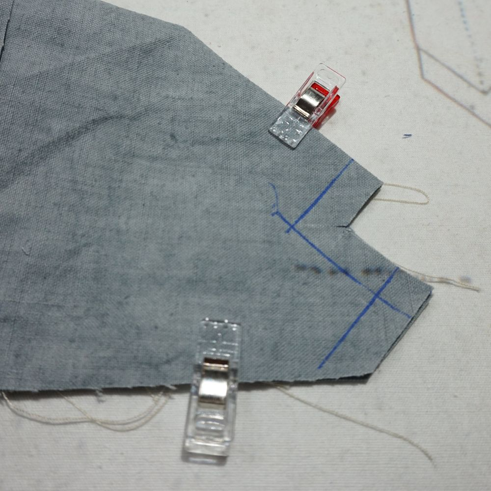
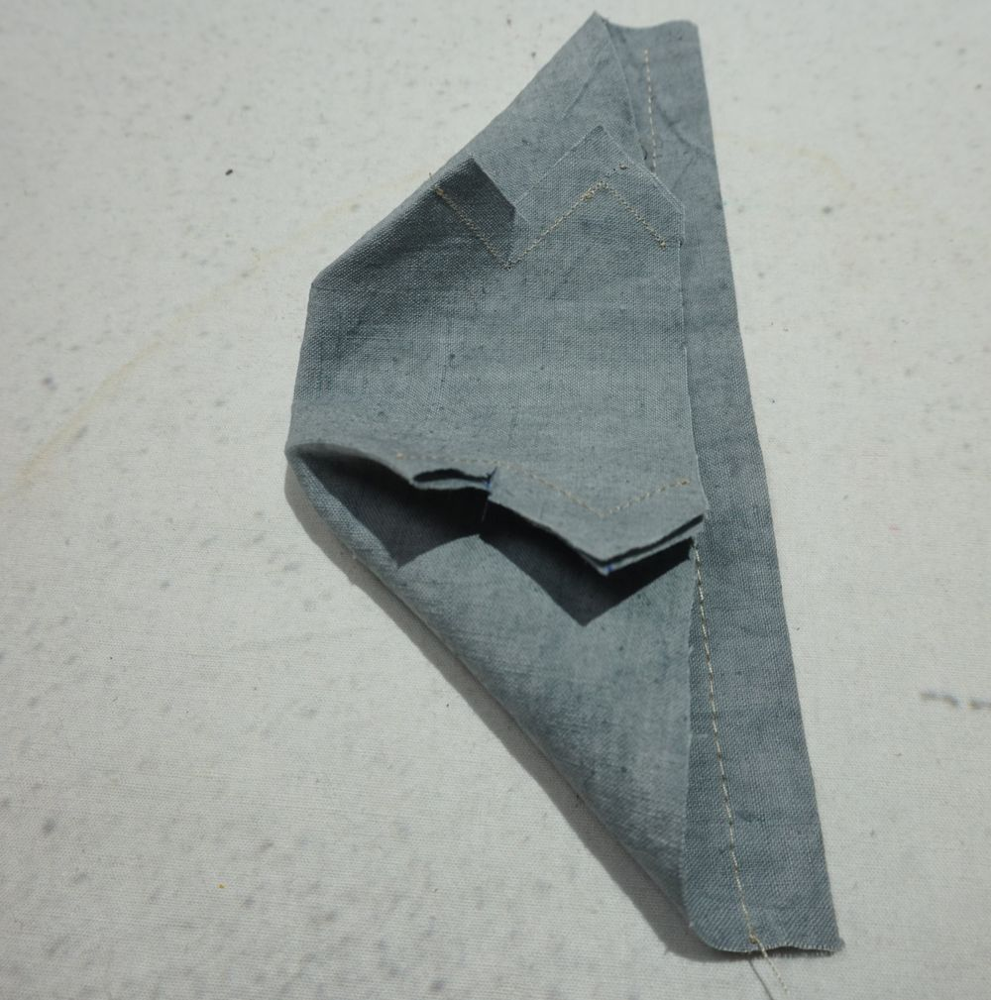
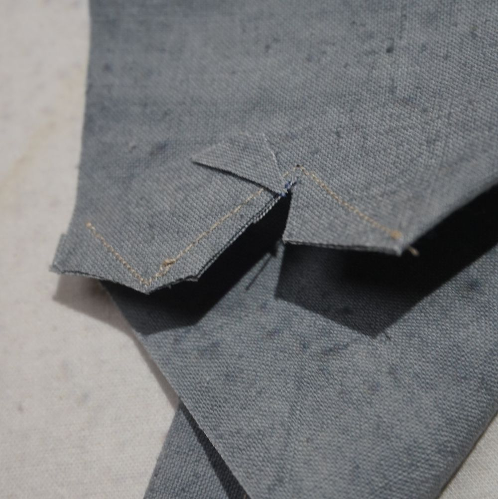
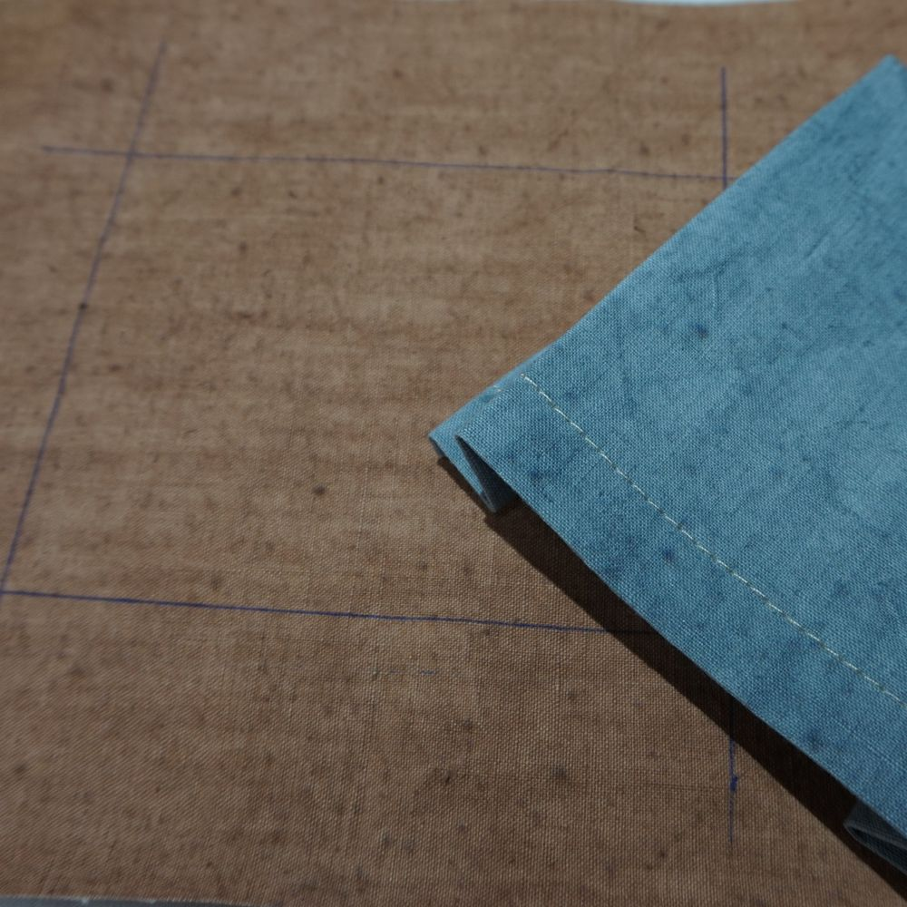
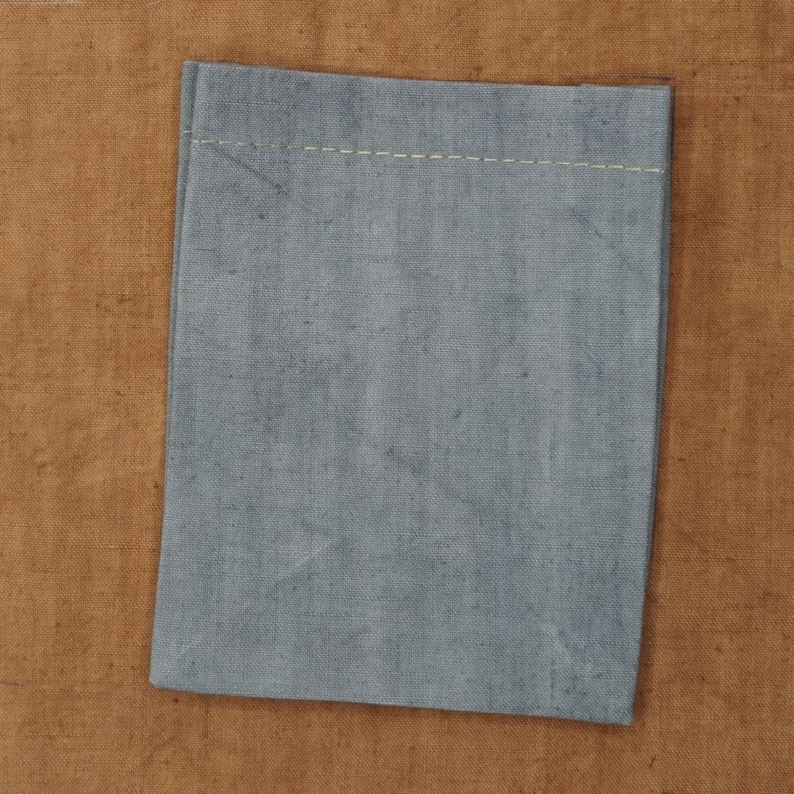
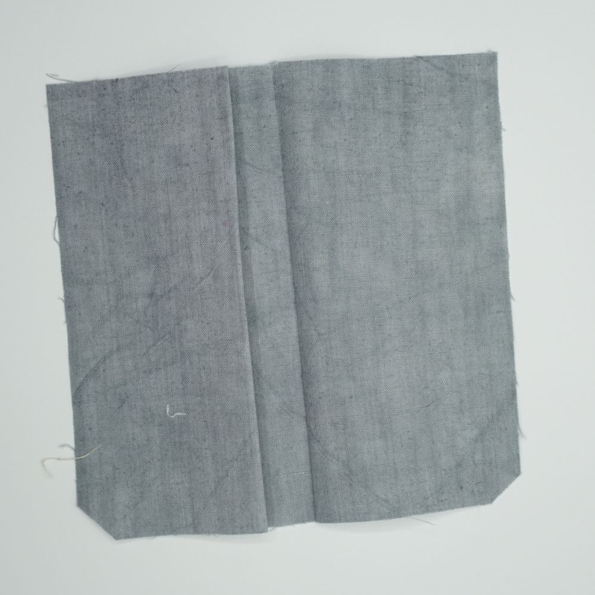
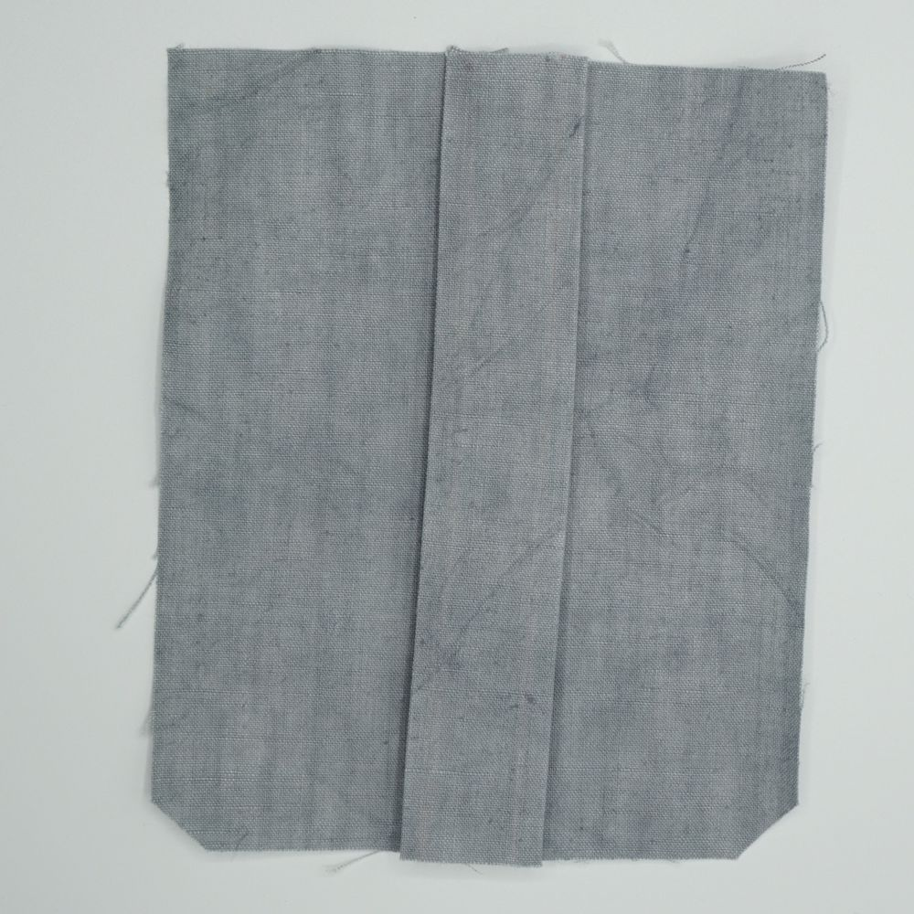
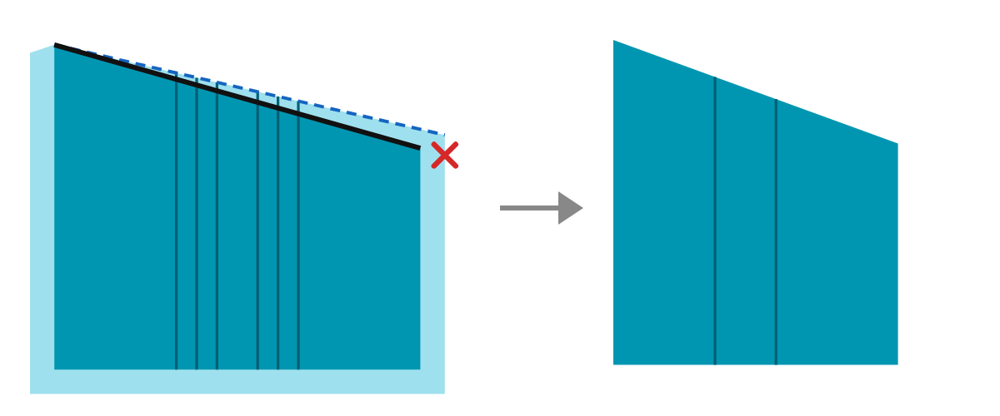

Patch pockets: sewing guide
This guide explains how to assemble the patch pocket with a side gusset, one-piece variant. The pattern can be downloaded on the Patch pockets page.
Pocket with side gusset – one-piece variant
Cut out the piece.

The cut piece, fold marks drawn Fold the corners of the piece: the lower right side onto the right side, and the lower left side onto the left side.

Corner folded and held with clips Sew, carefully following the seam allowance.

Corners sewn Clip the corners to make turning easier.

Corner clipped After turning, press carefully to mark the folds.

Pocket turned and pressed Position the piece on your pocket placement and sew all the sides of the piece except the top.

Pocket positioned on its placement Finished product

The finished pocket, sewn onto the main piece 
The upper corner of the gusset, pocket sewn
This guide also covers the pocket with a side gusset and a central pleat, variant with separate gussets. The only differences are, in order:
- making the central pleat (and, with a slanted opening, trimming the opening);
- attaching the separate cuff facing;
- the number of pieces, which increases the number of seams (their position and the assembly principles remain the same).
Making the pleats of a central gusset
Mark the two lines that delimit the central gusset.

The two gusset lines drawn Press each of these two lines in turn.

Fold pressed, line after line Turn the piece over.

Piece turned over, folds pressed Fold each side towards the inside of the gusset, the fold being made on a central line inside the gusset.

Sides folded towards the inside of the gusset Press the folds well.
Choose the side you want for your pocket: central gusset on the outside, or central gusset on the inside, therefore invisible.

Central gusset on the outside Central gusset on the inside (invisible)
Slanted opening with a centre pleat
Cut the front piece along the blue dashed line at the top: it is a straight line, not the shape of the opening.
Make the centre pleat (see above), then fix it with pins or basting stitches.
On the folded pocket, extend the black line at the top of the front piece to the red dot (mark on the pattern), which marks the end of the cutting line, on the turn-under.

Black line extended to the red dot, then trimmed Trim the excess fabric along this line.
Sew on the added cuff facing: it covers the top of the pocket and hides the trimmed edge.